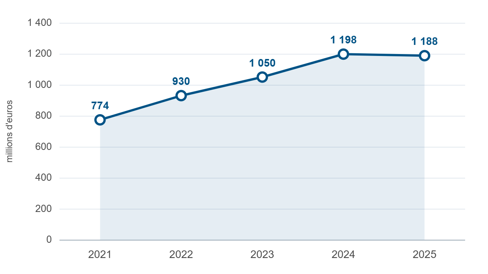
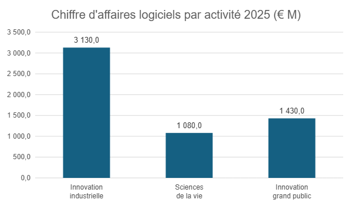
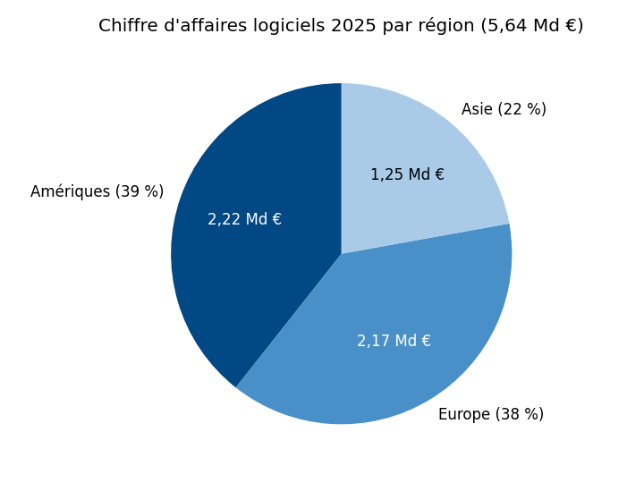

Économie de Dassault Systèmes
Dassault Systèmes gagne de l'argent en vendant des logiciels. Sur cette page on regarde combien elle vend, ce qu'il lui reste à la fin, dans quels domaines et dans quelles régions du monde.
L'entreprise en quelques mots
Dassault Systèmes a été créée en 1981 et son siège est à Vélizy-Villacoublay, près de Paris. Elle est cotée en bourse et fait partie du CAC 40. Le Groupe Industriel Marcel Dassault possède encore environ 40 % des actions, ce qui en fait le principal actionnaire. L'entreprise emploie à peu près 25 000 personnes.
Chiffres clés de 2025
6,24 Md €
chiffre d'affaires
1,2 Md €
résultat net
21,7 %
marge opérationnelle
82 %
de revenus récurrents
Évolution du chiffre d'affaires

Le chiffre d'affaires, c'est tout ce que l'entreprise a vendu dans l'année. Il monte chaque année depuis 2021 : on passe d'environ 4,9 milliards à 6,2 milliards d'euros. Le gros de la hausse a lieu en 2022 (+ 17 %). Ensuite ça ralentit, et entre 2024 et 2025 c'est presque stable (+ 0,4 %).
Résultat net

Le résultat net, c'est ce qu'il reste une fois que tout est payé (salaires, impôts, etc.). Il passe de 774 millions d'euros en 2021 à environ 1,2 milliard en 2024, puis il baisse un tout petit peu en 2025. La marge opérationnelle est de 21,7 % : sur 100 € vendus, l'activité rapporte environ 22 € de bénéfice.
Les activités

Plus de la moitié des ventes vient de l'industrie (aéronautique, automobile, construction navale...). Les sciences de la vie concernent la santé et la recherche médicale. L'innovation grand public, c'est surtout des logiciels pour les petites entreprises, comme SOLIDWORKS.
Où l'entreprise vend ses logiciels

Les ventes sont presque à égalité entre les Amériques (39 %) et l'Europe (38 %). L'Asie arrive derrière avec 22 %. Même si l'entreprise est française, l'Europe n'est pas sa première région, et elle ne dépend pas d'un seul marché.
Comment elle gagne de l'argent
| Type de revenu | Montant en 2025 | Variation |
|---|---|---|
| Abonnements et support | 4,62 Md € | + 6 % |
| Licences | 1,02 Md € | - 6 % |
Aujourd'hui les clients payent surtout un abonnement, chaque année, pour continuer à utiliser les logiciels. Ça fait des revenus réguliers (82 % des ventes de logiciels) donc l'entreprise sait à peu près ce qu'elle va gagner l'année suivante. Les licences, c'est-à-dire le logiciel acheté en une seule fois, baissent parce que de plus en plus de clients préfèrent l'abonnement.
Les concurrents
| Entreprise | Pays |
|---|---|
| Siemens | Allemagne |
| Autodesk | États-Unis |
| PTC | États-Unis |
Ces entreprises vendent elles aussi des logiciels de conception pour l'industrie. Dassault Systèmes reste un des leaders, surtout dans l'aéronautique et l'automobile.
Bilan
Ce qui va bien
L'entreprise gagne de l'argent, ses revenus reviennent chaque année grâce aux abonnements et ses clients sont répartis dans le monde entier.
Ce qui va moins bien
La croissance ralentit depuis 2024, les ventes de licences baissent et l'entreprise dépend beaucoup de l'industrie.
Pour 2026, Dassault Systèmes prévoit une croissance de son chiffre d'affaires entre 3 et 5 %. C'est plus qu'en 2025, mais on est loin de 2022.
Petit lexique
- Chiffre d'affaires
- total des ventes de l'entreprise sur une année.
- Résultat net
- bénéfice qui reste une fois toutes les dépenses payées.
- Marge opérationnelle
- part du chiffre d'affaires qui reste en bénéfice grâce à l'activité.
- Revenus récurrents
- revenus qui reviennent chaque année, comme les abonnements.
- Licence
- droit d'utiliser un logiciel, acheté en une fois.
- Actionnaire
- personne ou entreprise qui possède une partie de l'entreprise.
Sources : communiqué de résultats 2025 de Dassault Systèmes sur investor.3ds.com et comptes annuels 2021 à 2025 (chiffres arrondis). Les graphiques ont été faits par le groupe.